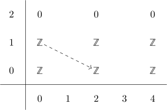
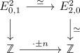
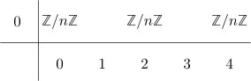

integral cohomology of BZ/nZ
Proposition
Let $n \in \mathbb{N}$, then
and with the ring structure $\mathbb{Z}/n \mathbb{Z}[x]$
Proof
b)
consider the fiber sequence
resp.
given by fiber sequence of a cyclic group, CP infinity and S^1
Then we write down the multiplicative cohomological serre spectral sequence

Note that the spectral sequence collapses at the $E^2$ page for degreereasons.
Therefore we want to understand the differentials of the $E^2$ page: Here we use multiplicative spectral sequence and y-axis (as well as multiplication of the E2 page of the cohomological serre spectral sequence under the kunneth iso) so it suffices to understand the dashed differential above. So choose generators $x \in E_{2,0}, y \in E_{0,1}$
Here using the leibniz rule gives that
(possibly up to sign - which does not really matter when determining the image / kernel)
Now the universal coefficient Theorem for cohomology & absolute Hurewicz theorem gives us
which shows that $H^2(\mathrm{B}C_p)$ contains $\mathrm{Ext}(C_p, \mathbb{Z}) = C_p$ as direct summand.
But the only thing that can contribute to $H^2(\mathrm{B}C_p)$ is a quotient of $\mathbb{Z}$, so the map must be

which in particular shows that the other maps
\begin{displaymath}
\begin{sseqpage}[cohomological Serre grading,
clip = false,
xscale = 1.0,
yscale = 1.0,
% x axis gap=1.0cm,
% y axis gap=1.0cm,
classes = {draw = none}
]
\class["\mathbb{Z}"](0,0)
\class["y\mathbb{Z}"](0,1)
\class["x\mathbb{Z}"](2,0)
\class["xy\mathbb{Z}"](2,1)
\class["x^2\mathbb{Z}"](4,0)
\class["x^2y\mathbb{Z}"](4,1)
\d[\cdot \pm n]2(0,1)
\d[\cdot \pm n]2(0,1)
\end{sseqpage}
\end{displaymath}are given by multiplication with $\pm n$
Therefore the $E^{\infty}$ page looks like

and therefore additively
with $\vert x \vert = 2$.
Furthermore the ring structure is given by $\mathbb{Z}/ \mathbb{Z}[x]$ since $(px)$ forms an ideal of $\mathbb{Z}[x]$